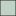

<!doctype html>
<html lang="en">
    <head>
        <meta charset="utf-8">
        <meta http-equiv="X-UA-Compatible" content="IE=edge">
        <meta name="viewport" content="initial-scale=1,user-scalable=no,maximum-scale=1,width=device-width">
        <meta name="mobile-web-app-capable" content="yes">
        <meta name="apple-mobile-web-app-capable" content="yes">
        <link rel="stylesheet" href="css/leaflet.css">
        <link rel="stylesheet" href="css/qgis2web.css">
        <link rel="stylesheet" href="css/leaflet-search.css">
        <link rel="stylesheet" href="css/Control.OSMGeocoder.css">
        <link rel="stylesheet" href="css/leaflet-measure.css">
        <style>
        html, body, #map {
            width: 100%;
            height: 100%;
            padding: 0;
            margin: 0;
        }
        </style>
        <title></title>
    </head>
    <body>
        <div id="map">
        </div>
        <script src="js/qgis2web_expressions.js"></script>
        <script src="js/leaflet.js"></script>
        <script src="js/leaflet.rotatedMarker.js"></script>
        <script src="js/leaflet.pattern.js"></script>
        <script src="js/leaflet-hash.js"></script>
        <script src="js/Autolinker.min.js"></script>
        <script src="js/rbush.min.js"></script>
        <script src="js/labelgun.min.js"></script>
        <script src="js/labels.js"></script>
        <script src="js/Control.OSMGeocoder.js"></script>
        <script src="js/leaflet-measure.js"></script>
        <script src="js/proj4.js"></script>
        <script src="js/proj4leaflet.js"></script>
        <script src="js/leaflet-search.js"></script>
        <script src="data/Gologie_1.js"></script>
        <script src="data/VergerscidricolesenAppellationdOrigine_2.js"></script>
        <script src="data/Transformateurs_3.js"></script>
        <script>
         var map = L.map('map', {
            zoomControl:true, maxZoom:28, minZoom:1
        }).fitBounds([[46.7806803182,-3.40011590906],[50.1413903024,4.99705027505]]);
        var hash = new L.Hash(map);
        map.attributionControl.addAttribution('<a href="https://github.com/tomchadwin/qgis2web" target="_blank">qgis2web</a>');
        map.attributionControl.addAttribution('<a href="https://infoterre.brgm.fr/page/cartes-geologiques" target="_blank">BRGM, données mises à jour du 26/08/2020</a>');
        map.attributionControl.addAttribution('<a href="https://cadastre.data.gouv.fr/data/etalab-cadastre/2020-01-01/shp/departements/" target="_blank">Data.gouv</a>');
        var measureControl = new L.Control.Measure({
            primaryLengthUnit: 'meters',
            secondaryLengthUnit: 'kilometers',
            primaryAreaUnit: 'sqmeters',
            secondaryAreaUnit: 'hectares'
        });
        measureControl.addTo(map);
        var bounds_group = new L.featureGroup([]);
        function setBounds() {
        }
        var overlay_osm_0 = L.tileLayer('https://tile.openstreetmap.org/{z}/{x}/{y}.png', {
            opacity: 1.0,
            attribution: '&copy; <a href="https://www.openstreetmap.org/copyright">OpenStreetMap</a> contributors',
            minZoom: 1,
            maxZoom: 28,
            minNativeZoom: 0,
            maxNativeZoom: 19
        });
        overlay_osm_0.addTo(map);
        map.addLayer(overlay_osm_0);
        var GeoportailFrance_orthos = L.tileLayer('https://wxs.ign.fr/{apikey}/geoportail/wmts?REQUEST=GetTile&SERVICE=WMTS&VERSION=1.0.0&STYLE={style}&TILEMATRIXSET=PM&FORMAT={format}&LAYER=ORTHOIMAGERY.ORTHOPHOTOS&TILEMATRIX={z}&TILEROW={y}&TILECOL={x}', {
            attribution: '<a target="_blank" href="https://www.geoportail.gouv.fr/">Geoportail France</a>',
            bounds: [[-75, -180], [81, 180]],
            minZoom: 2,
            maxZoom: 19,
            apikey: 'choisirgeoportail',
            format: 'image/jpeg',
            style: 'normal'
        });
        GeoportailFrance_orthos.addTo(map);
        map.addLayer(GeoportailFrance_orthos);
        function pop_Gologie_1(feature, layer) {
            var popupContent = '<table>\
                    <tr>\
                        <td colspan="2"><strong>LITHOLOGIE</strong><br />' + (feature.properties['LITHOLOGIE'] !== null ? Autolinker.link(String(feature.properties['LITHOLOGIE'])) : '') + '</td>\
                    </tr>\
                    <tr>\
                        <td colspan="2"><strong>ERE</strong><br />' + (feature.properties['ERE'] !== null ? Autolinker.link(String(feature.properties['ERE'])) : '') + '</td>\
                    </tr>\
                    <tr>\
                        <td colspan="2"><strong>SYSTEME</strong><br />' + (feature.properties['SYSTEME'] !== null ? Autolinker.link(String(feature.properties['SYSTEME'])) : '') + '</td>\
                    </tr>\
                    <tr>\
                        <td colspan="2"><strong>AGE_STRAT</strong><br />' + (feature.properties['AGE_STRAT'] !== null ? Autolinker.link(String(feature.properties['AGE_STRAT'])) : '') + '</td>\
                    </tr>\
                    <tr>\
                        <td colspan="2"><strong>AGE_RADIO</strong><br />' + (feature.properties['AGE_RADIO'] !== null ? Autolinker.link(String(feature.properties['AGE_RADIO'])) : '') + '</td>\
                    </tr>\
                    <tr>\
                        <td colspan="2"><strong>AGE_INF</strong><br />' + (feature.properties['AGE_INF'] !== null ? Autolinker.link(String(feature.properties['AGE_INF'])) : '') + '</td>\
                    </tr>\
                    <tr>\
                        <td colspan="2"><strong>AGE_SUP</strong><br />' + (feature.properties['AGE_SUP'] !== null ? Autolinker.link(String(feature.properties['AGE_SUP'])) : '') + '</td>\
                    </tr>\
                    <tr>\
                        <td colspan="2"><strong>NATURE</strong><br />' + (feature.properties['NATURE'] !== null ? Autolinker.link(String(feature.properties['NATURE'])) : '') + '</td>\
                    </tr>\
                    <tr>\
                        <td colspan="2"><strong>GEOCHIMIE</strong><br />' + (feature.properties['GEOCHIMIE'] !== null ? Autolinker.link(String(feature.properties['GEOCHIMIE'])) : '') + '</td>\
                    </tr>\
                    <tr>\
                        <td colspan="2"><strong>GEODYNA</strong><br />' + (feature.properties['GEODYNA'] !== null ? Autolinker.link(String(feature.properties['GEODYNA'])) : '') + '</td>\
                    </tr>\
                    <tr>\
                        <td colspan="2"><strong>STRUCTURE</strong><br />' + (feature.properties['STRUCTURE'] !== null ? Autolinker.link(String(feature.properties['STRUCTURE'])) : '') + '</td>\
                    </tr>\
                </table>';
            layer.bindPopup(popupContent, {maxHeight: 400});
        }

        function style_Gologie_1_0() {
            return {
                pane: 'pane_Gologie_1',
                opacity: 1,
                color: 'rgba(35,35,35,1.0)',
                dashArray: '',
                lineCap: 'butt',
                lineJoin: 'miter',
                weight: 1.0, 
                fill: true,
                fillOpacity: 1,
                fillColor: 'rgba(151,181,161,0.596078431373)',
            }
        }
        map.createPane('pane_Gologie_1');
        map.getPane('pane_Gologie_1').style.zIndex = 401;
        map.getPane('pane_Gologie_1').style['mix-blend-mode'] = 'normal';
        var layer_Gologie_1 = new L.geoJson(json_Gologie_1, {
            attribution: '<a href=""></a>',
            pane: 'pane_Gologie_1',
            onEachFeature: pop_Gologie_1,
            style: style_Gologie_1_0,
        });
        bounds_group.addLayer(layer_Gologie_1);
        map.addLayer(layer_Gologie_1);
        function pop_VergerscidricolesenAppellationdOrigine_2(feature, layer) {
            var popupContent = '<table>\
                    <tr>\
                        <td colspan="2"><strong>IDU</strong><br />' + (feature.properties['IDU'] !== null ? Autolinker.link(String(feature.properties['IDU'])) : '') + '</td>\
                    </tr>\
                    <tr>\
                        <td colspan="2"><strong>INAO</strong><br />' + (feature.properties['INAO'] !== null ? Autolinker.link(String(feature.properties['INAO'])) : '') + '</td>\
                    </tr>\
                    <tr>\
                        <td colspan="2"><strong>ISOLE</strong><br />' + (feature.properties['ISOLE'] !== null ? Autolinker.link(String(feature.properties['ISOLE'])) : '') + '</td>\
                    </tr>\
                    <tr>\
                        <td colspan="2"><strong>AOC</strong><br />' + (feature.properties['AOC'] !== null ? Autolinker.link(String(feature.properties['AOC'])) : '') + '</td>\
                    </tr>\
                    <tr>\
                        <td colspan="2"><strong>NB_AOC</strong><br />' + (feature.properties['NB_AOC'] !== null ? Autolinker.link(String(feature.properties['NB_AOC'])) : '') + '</td>\
                    </tr>\
                    <tr>\
                        <td colspan="2"><strong>NB_VARIETE</strong><br />' + (feature.properties['NB_VARIETE'] !== null ? Autolinker.link(String(feature.properties['NB_VARIETE'])) : '') + '</td>\
                    </tr>\
                    <tr>\
                        <td colspan="2"><strong>SURF_CADA</strong><br />' + (feature.properties['SURF_CADA'] !== null ? Autolinker.link(String(feature.properties['SURF_CADA'])) : '') + '</td>\
                    </tr>\
                    <tr>\
                        <td colspan="2"><strong>SURF_PLANT</strong><br />' + (feature.properties['SURF_PLANT'] !== null ? Autolinker.link(String(feature.properties['SURF_PLANT'])) : '') + '</td>\
                    </tr>\
                    <tr>\
                        <td colspan="2"><strong>PLANT_CAD</strong><br />' + (feature.properties['PLANT_CAD'] !== null ? Autolinker.link(String(feature.properties['PLANT_CAD'])) : '') + '</td>\
                    </tr>\
                    <tr>\
                        <td colspan="2"><strong>P_S_PLANT</strong><br />' + (feature.properties['P_S_PLANT'] !== null ? Autolinker.link(String(feature.properties['P_S_PLANT'])) : '') + '</td>\
                    </tr>\
                    <tr>\
                        <td colspan="2"><strong>NB_ARBRE</strong><br />' + (feature.properties['NB_ARBRE'] !== null ? Autolinker.link(String(feature.properties['NB_ARBRE'])) : '') + '</td>\
                    </tr>\
                    <tr>\
                        <td colspan="2"><strong>D_PLANT</strong><br />' + (feature.properties['D_PLANT'] !== null ? Autolinker.link(String(feature.properties['D_PLANT'])) : '') + '</td>\
                    </tr>\
                    <tr>\
                        <td colspan="2"><strong>AGE_MOY</strong><br />' + (feature.properties['AGE_MOY'] !== null ? Autolinker.link(String(feature.properties['AGE_MOY'])) : '') + '</td>\
                    </tr>\
                    <tr>\
                        <td colspan="2"><strong>P_POMME</strong><br />' + (feature.properties['P_POMME'] !== null ? Autolinker.link(String(feature.properties['P_POMME'])) : '') + '</td>\
                    </tr>\
                    <tr>\
                        <td colspan="2"><strong>P_POIRE</strong><br />' + (feature.properties['P_POIRE'] !== null ? Autolinker.link(String(feature.properties['P_POIRE'])) : '') + '</td>\
                    </tr>\
                    <tr>\
                        <td colspan="2"><strong>P_PHENO</strong><br />' + (feature.properties['P_PHENO'] !== null ? Autolinker.link(String(feature.properties['P_PHENO'])) : '') + '</td>\
                    </tr>\
                    <tr>\
                        <td colspan="2"><strong>P_ACIDE</strong><br />' + (feature.properties['P_ACIDE'] !== null ? Autolinker.link(String(feature.properties['P_ACIDE'])) : '') + '</td>\
                    </tr>\
                    <tr>\
                        <td colspan="2"><strong>P_DOUCE</strong><br />' + (feature.properties['P_DOUCE'] !== null ? Autolinker.link(String(feature.properties['P_DOUCE'])) : '') + '</td>\
                    </tr>\
                </table>';
            layer.bindPopup(popupContent, {maxHeight: 400});
        }

        function style_VergerscidricolesenAppellationdOrigine_2_0() {
            return {
                pane: 'pane_VergerscidricolesenAppellationdOrigine_2',
                opacity: 1,
                color: 'rgba(0,0,0,1.0)',
                dashArray: '',
                lineCap: 'butt',
                lineJoin: 'miter',
                weight: 1.0, 
                fill: true,
                fillOpacity: 1,
                fillColor: 'rgba(49,129,6,0.607843137255)',
            }
        }
        map.createPane('pane_VergerscidricolesenAppellationdOrigine_2');
        map.getPane('pane_VergerscidricolesenAppellationdOrigine_2').style.zIndex = 402;
        map.getPane('pane_VergerscidricolesenAppellationdOrigine_2').style['mix-blend-mode'] = 'normal';
        var layer_VergerscidricolesenAppellationdOrigine_2 = new L.geoJson(json_VergerscidricolesenAppellationdOrigine_2, {
            attribution: '<a href=""></a>',
            pane: 'pane_VergerscidricolesenAppellationdOrigine_2',
            onEachFeature: pop_VergerscidricolesenAppellationdOrigine_2,
            style: style_VergerscidricolesenAppellationdOrigine_2_0,
        });
        bounds_group.addLayer(layer_VergerscidricolesenAppellationdOrigine_2);
        map.addLayer(layer_VergerscidricolesenAppellationdOrigine_2);
        function pop_Transformateurs_3(feature, layer) {
            var popupContent = '<table>\
                    <tr>\
                        <td colspan="2"><strong>INAO</strong><br />' + (feature.properties['INAO'] !== null ? Autolinker.link(String(feature.properties['INAO'])) : '') + '</td>\
                    </tr>\
                    <tr>\
                        <td colspan="2"><strong>AOC</strong><br />' + (feature.properties['AOC'] !== null ? Autolinker.link(String(feature.properties['AOC'])) : '') + '</td>\
                    </tr>\
                    <tr>\
                        <td colspan="2"><strong>CoordGPS1</strong><br />' + (feature.properties['CoordGPS1'] !== null ? Autolinker.link(String(feature.properties['CoordGPS1'])) : '') + '</td>\
                    </tr>\
                    <tr>\
                        <td colspan="2"><strong>CoordGPS2</strong><br />' + (feature.properties['CoordGPS2'] !== null ? Autolinker.link(String(feature.properties['CoordGPS2'])) : '') + '</td>\
                    </tr>\
                </table>';
            layer.bindPopup(popupContent, {maxHeight: 400});
        }

        function style_Transformateurs_3_0() {
            return {
                pane: 'pane_Transformateurs_3',
                radius: 4.0,
                opacity: 1,
                color: 'rgba(0,0,0,1.0)',
                dashArray: '',
                lineCap: 'butt',
                lineJoin: 'miter',
                weight: 1,
                fill: true,
                fillOpacity: 1,
                fillColor: 'rgba(243,30,6,0.796078431373)',
            }
        }
        map.createPane('pane_Transformateurs_3');
        map.getPane('pane_Transformateurs_3').style.zIndex = 403;
        map.getPane('pane_Transformateurs_3').style['mix-blend-mode'] = 'normal';
        var layer_Transformateurs_3 = new L.geoJson(json_Transformateurs_3, {
            attribution: '<a href=""></a>',
            pane: 'pane_Transformateurs_3',
            onEachFeature: pop_Transformateurs_3,
            pointToLayer: function (feature, latlng) {
                var context = {
                    feature: feature,
                    variables: {}
                };
                return L.circleMarker(latlng, style_Transformateurs_3_0(feature));
            },
        });
        bounds_group.addLayer(layer_Transformateurs_3);
        map.addLayer(layer_Transformateurs_3);
        var osmGeocoder = new L.Control.OSMGeocoder({
            collapsed: false,
            position: 'topright',
            text: 'Search',
        });
        osmGeocoder.addTo(map);
        var baseMaps = {};
        L.control.layers(baseMaps,{' Transformateurs': layer_Transformateurs_3,' Vergers cidricoles en Appellation d\'Origine': layer_VergerscidricolesenAppellationdOrigine_2,' Géologie': layer_Gologie_1,"osm": overlay_osm_0,}).addTo(map);
        setBounds();
        map.addControl(new L.Control.Search({
            layer: layer_VergerscidricolesenAppellationdOrigine_2,
            initial: false,
            hideMarkerOnCollapse: true,
            propertyName: 'INAO'}));
        </script>
    </body>
</html>
